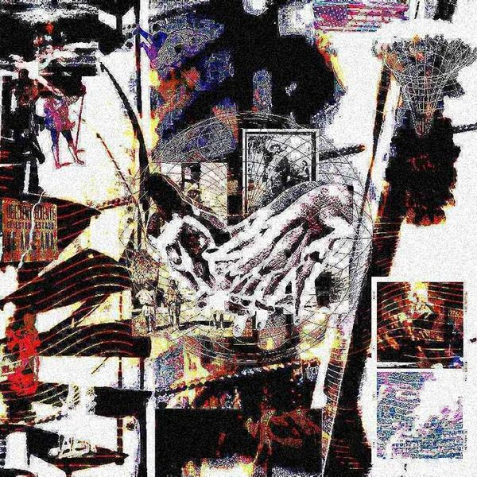

— 0300 m
Bio
Saudaji es el proyecto solista de Santiago Tejeda — productor, compositor, ingeniero de audio y diseñador con base en Ciudad de México. Hace música desde los 18 años y se mueve entre el neofolk, el pop alternativo y las texturas orgánicas, buscando siempre otras formas de producir y componer: canciones que suenan a cuarto, a campo y a máquina al mismo tiempo.
Como solista ha publicado los EPs «tormenta, Callada» (2024) y «☼ ☞ ☺» (2025), además del sencillo «RUIDO» (2025), todos producidos, grabados y mezclados por él mismo bajo una ética DIY. Su música retrata la ansiedad y la belleza de lo cotidiano con un enfoque honesto y artesanal.
Fuera de su proyecto es productor e ingeniero de audio, y socio y dueño de Sagredo Estudio, donde ha colaborado con artistas clave de la escena alternativa mexicana como Wet Baes, ALONG y Los Milagro. Ha tocado en más de la mitad del país y en Los Ángeles, consolidándose como parte de la nueva ola del pop independiente mexicano.
- Productor, compositor e ingeniero de audio. Socio y dueño de Sagredo Estudio en CDMX.
- Shows y colaboraciones con Los Milagro, ALONG, Wet Baes, Daniel Quién y BAM BAM ATOM., entre otros.
- Grabaciones con ALONG, Ivana, Doris Anahí, Rafa Arreguín, Fer Altuzar, Ahora Juntos, Disco Bahía y Enzo Marcelo, entre otros.
- Producciones para ALONG, Fer Altuzar, BAM BAM ATOM., Doris Anahí y Ramona Vee, entre otros.
- Presencia en Ibero 90.9 · presentaciones en México y Los Ángeles.
— 0700 m
Fechas
Próximas fechas pronto. Pon tu email y te aviso primero.
Tus datos solo se usan para avisarte de este proyecto. Cero spam.
— 1100 m
Trabajo
Producción, mezcla y composición para otros artistas, desde Sagredo Estudio.
 BAM BAM ATOM.BAM BAM ATOM.
BAM BAM ATOM.BAM BAM ATOM.Producción · Composición · 2023
 FEEL the GROOVE.BAM BAM ATOM.
FEEL the GROOVE.BAM BAM ATOM.Producción · Mezcla · Composición · 2024
 EternidadFer Altuzar
EternidadFer AltuzarProducción · Composición · 2025
 Por Las Buenas — EPDoris Anahí
Por Las Buenas — EPDoris AnahíCo-producción con Wet Baes (Por Las Buenas, Let It Die) · Producción (Before I Go) · Composición en los tres temas · 2023
 MAGAMUNDIALONG
MAGAMUNDIALONGProducción · Mezcla · Composición · 2026
 Corto PlazoFAVZTO
Corto PlazoFAVZTOProducción · Mezcla · Masterización · 2026

Qué costumbre tan salvaje / DOOMINACIÓNPERSONAProducción · Mezcla · Masterización · Composición · 2026
 La florTuzeint & Saudaji
La florTuzeint & SaudajiProducción · Composición · 2026
— 1900 m
Contacto
¿Buscas producción, mezcla o composición para tu proyecto? Manda tu mensaje.